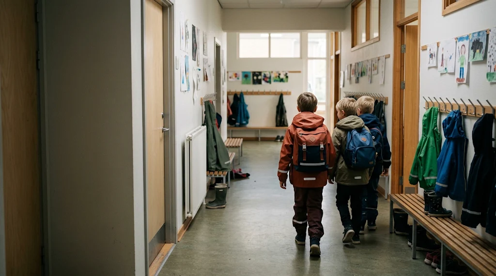

Skoler – fra komplekse udfordringer til fælles handling
Ledelsessparring og rådgivning til skoleledelser, bestyrelser og beslutningstagere i private og offentlige skoler.

Ledelsessparring og rådgivning
Når en skole kan mærke, at noget ikke fungerer, men har brug for hjælp til at forstå hvorfor, eller når lederne står med ansvaret, men ikke nødvendigvis har tiden eller muligheden for selv at træde et skridt tilbage og se på helheden.
Næste Skridt tilbyder professionel sparring til skoleledere, institutionsledere og ledere på kommunalt niveau. Med en stærk profil inden for strategisk skoleledelse, personaleledelse og specialområdet kan vi hjælpe med at kvalificere og styrke jeres lokale praksis.
Vi hjælper med at
- se
- forstå
- vælge
- handle
- følge op
Det kan være
- udfordringer med trivsel
- faglig udvikling, der ikke flytter sig
- medarbejdere, der er pressede
- inklusion, der er blevet svært
- uro eller mistrivsel i bestemte klasser eller årgange
- en organisation, der er vokset sig kompleks
- en ledelse, der mangler et fælles billede af, hvad der skal gøres
Eksempler på ydelser
- Sparring til skoleledere omkring organisering og ledelse af specialtilbud
- Procesfacilitering i strategiske udviklingsprojekter
- Udvikling af inkluderende læringsmiljøer
- Udarbejdelse og implementering af visitationsprocedurer
- Opbygning og ledelse af tværfaglige samarbejder
- Udvikling af ledelsesinformation og beslutningsgrundlag
- Styring og optimering af budgetter inden for specialområdet
- Trivsel og udvikling af medarbejderteams
- Tilsyn og kvalitetssikring på special- og dagbehandlingstilbud
Seks trin fra udfordring til handling
De seks trin gælder for forældre, skoler og kommuner.
Se hele forløbetHvem står bag Næste Skridt?
Vi hedder Christian og Anne, og vi har arbejdet med skoleledelse i både offentlige og private skolemiljøer samt på kommunalt niveau. Vi har særlig erfaring med børn i udsatte positioner, specialundervisning, personaleledelse og strategisk skoleudvikling.
Vi tilbyder ledelsessparring, pædagogisk udvikling og støtte til samarbejdet omkring børn i udsatte positioner. Her forener vi coaching og refleksion med konkret viden om skoleledelse, specialundervisning, inklusion og implementering af forandringer.
Lad os tage en snak.
Fortæl kort, hvad I står med på skolen, så finder vi et tidspunkt til en snak.